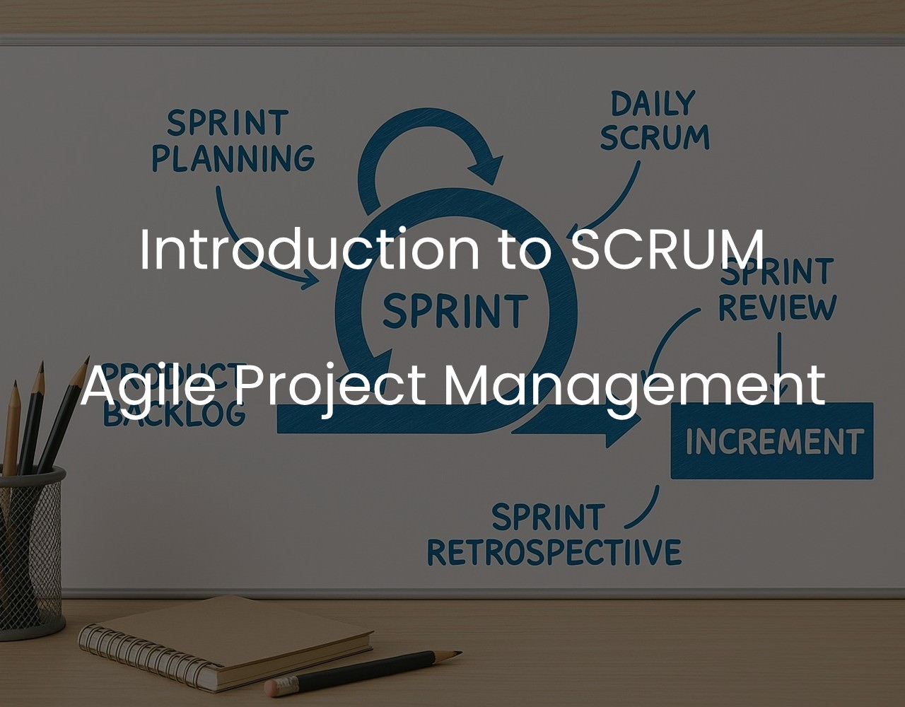

Introduction to SCRUM Agile Project Management
SCRUM is an agile project management framework that empowers self-organizing, cross-functional teams to deliver high-value product increments through time-boxed sprints, emphasizing transparency, adaptability, and continuous improvement.

In today's fast-paced world, traditional project management methods struggle with evolving customer needs. Agile Project Management steps in as a flexible and dynamic framework for complex projects, delivering maximum value. At its core is SCRUM, a powerful and agile method.
SCRUM is a robust framework for managing complex product development. Its agility is ideal for addressing evolving challenges while ensuring high value. SCRUM relies on experience-based learning and informed decisions. It uses an iterative, step-by-step approach to improve predictability and manage risks.
You can also find our detailed presentation on SCRUM Agile Project Management.
Three Pillars of Empirical Process Control
SCRUM rests on three key pillars that shape its practices. The first pillar is transparency, which highlights the importance of making all aspects of the development process visible to those responsible for the outcome. Second, SCRUM fosters a shared language among all participants, ensuring clear communication. Lastly, those performing the work and those inspecting the results need to agree on a common definition of 'Done.' These pillars establish trust and enhance efficiency within SCRUM.
SCRUM Team
The SCRUM Team is a central element of the framework, consisting of three essential roles: the Product Owner, the Scrum Master, and the Development Team. SCRUM Teams are self-organizing and cross-functional, meaning they have all the necessary skills to complete the work without external dependencies.
- The Product Owner represents the customer's interests, prioritizing tasks and ensuring alignment with organizational goals.
- The Scrum Master facilitates team progress by removing barriers and enhancing productivity.
- The Development Team, which is cross-functional and self-organizing, focuses on delivering a potentially releasable product increment at the end of each sprint. Together, these roles form a dynamic and efficient team that drives SCRUM's success in complex projects.
SCRUM Process
The SCRUM process consists of a sprint which is a well-structured cycle comprising key events: Sprint Planning, Daily Scrums, development work, Sprint Review, and Sprint Retrospective.

These events are time-boxed, offering formal opportunities for assessment and adaptation. Sprints typically last one month or less, maintaining consistency for risk management and efficient cost control. They kick off immediately after the previous Sprint concludes, with each Sprint having a defined goal and flexible plan to guide product development.
Throughout the Sprint, the team focuses on creating a "Done," usable, and potentially releasable product increment, with a commitment to safeguard the Sprint Goal and maintain quality, even as scope adjustments may occur based on evolving insights.
- Sprint Planning: Sprint Planning is a critical event where the SCRUM Team collaboratively plans the work for the upcoming sprint. They determine what can be achieved and how it will be done, resulting in a clear Sprint Goal.
- Daily Scrum: The Daily Scrum is a brief 15-minute daily meeting where the Development Team discusses what they did, plan to do, and any obstacles. It enhances communication, identifies issues, and promotes quick decision-making.
- Sprint Review: The Sprint Review is a presentation and feedback session at the end of each Sprint.
- Sprint Retrospective: The Sprint Retrospective, following the Review, allows the team to inspect their performance, identify improvements, and create a plan for the next Sprint, ensuring continuous enhancement of the process.
SCRUM Artifacts
SCRUM artifacts promote transparency and understanding among team members. The Scrum Master collaborates with stakeholders to ensure these artifacts are clear and complete, using observation and communication to identify and address any gaps. There are three primary SCRUM artifacts: the Product Backlog, Sprint Backlog, and Increment, each serving a specific purpose in product development.
- Product Backlog: The Product Backlog is a dynamic catalog of features, requirements, and fixes needed for future product releases. The Product Owner manages it, adding detail and prioritization through ongoing refinement. This ensures that higher-priority items are clearer and more detailed, making them ready for selection during Sprint Planning.
- Sprint Backlog: The Sprint Backlog is a collection of Product Backlog items chosen for a specific Sprint, along with a plan to achieve the Sprint Goal. It adapts as the Sprint progresses, with the Development Team modifying it to reflect their evolving understanding of the work needed. Only the Development Team can change the Sprint Backlog during a Sprint.
- Increment: The Increment represents all completed Product Backlog items from a Sprint and cumulative progress from previous Sprints. It must meet the definition of "Done" at the end of each Sprint, whether it's released or not, demonstrating continuous value delivery.
Monitoring and Releasing
Monitoring progress involves tracking total work remaining to reach goals, allowing stakeholders to visualize progress through charts. Additionally, SCRUM enforces a shared understanding of "Done" for items or Increments, guiding Development Teams to deliver potentially releasable functionality in line with the current definition of "Done." This definition evolves as teams mature to maintain high-quality standards.
Summary
SCRUM is an agile project management framework designed to optimize product development by embracing transparency, inspection, and adaptation. It operates in time-bound cycles known as sprints, each comprising critical events like Sprint Planning, Daily Scrums, and Sprint Review. These sprints typically span a month or less to manage complexity and control costs. SCRUM fosters teamwork and emphasizes delivering potentially releasable product increments while maintaining quality and adhering to the Sprint Goal. With a Product Owner, Development Team, and Scrum Master at its core, SCRUM empowers self-organizing, cross-functional teams to efficiently manage work, adapt to changing requirements, and continuously improve their processes.
References
[1] Ward Cunningham: "Manifesto for Agile Software Development"
[2] Ken Schwaber and Jeff Sutherland: "The Scrum Guide"
[3] Emily Bonnie: "Fundamentals of the Scrum Methodology"